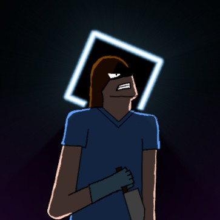

This page serves to credit every person who has provided their own
contribution to this series. If you wish to support a specific
creator, you can find their social media right here.

Name
Tyler
Title
Series Founder
Bio
I'm a 20 year old who know quite a bit about computers,
programming, and game design. I also know a little about how
to do other things like art or writing if need be.